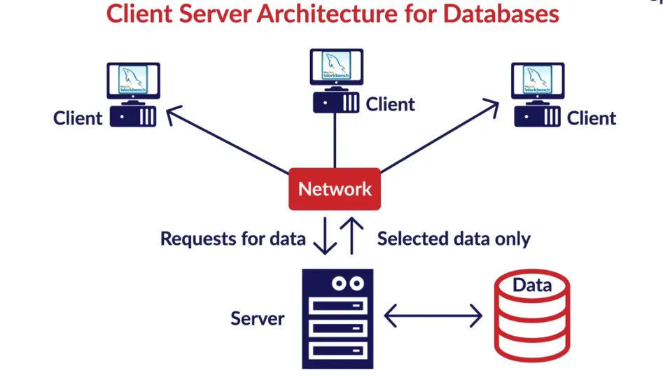

A man's nothing without his tools.
—Kathy Reichs
Installatie pgAdmin
In dit hoofdstuk installeer en configureer je pgadmin, serverconnecties, … Daar komt in het begin heel wat bij kijken. Er kan (en zal) vanalles fout lopen in het begin, maar geen nood: wij zijn er om je te helpen.
Verbinden met de databankserver
Je kan databanksoftware op je eigen laptop installeren. Voor grotere applicaties werkt men echter met een databankserver. In onze opleiding gebruiken we een PostgreSQL server. Je communiceert met zo’n server via een client. Er bestaan tientallen clients. In dit OPO zullen we er twee gebruiken: pgAdmin en DBSchema. Voor de eerste lessen volstaat pgAdmin.
Onderstaande figuur toont hoe een client nooit rechtstreeks met de data zelf interageert, maar hoe dit altijd via een databankserver gaat (bron figuur).
Installatie pgAdmin
Volg nu de stappen in het document ‘handleiding23-24.pdf’. De handleiding beschrijft gedetailleerd hoe je pgAdmin moet installeren en instellen om connectie(s) met de databankserver te kunnen gebruiken. Doe dit nu eerst. Het filmpje hieronder volgt de stappen van de handleiding.
Als de stappen in deze handleiding gelukt zijn, beschik je over drie connecties naar de databank:
- De connectie via poort 54321 blijft elk jaar hetzelfde. Hier vind je een aantal basisdatabanken die gedurende meerdere academiejaren gebruikt kunnen worden.
- De tweede connectie, via poort 52324 wordt elk jaar aangepast. Dit academiejaar is 23-24, vandaar de keuze voor deze poort. Via deze connectie bereik je o.a. de databank van je reeks waar je zelf nieuwe schema’s kan maken.
- Er is tenslotte een derde connectie die gebruik maakt van pooling: 62324 (ook elk jaar nieuw, volgend jaar dus 62425 …). Deze connectie geeft toegang tot exact hetzelfde als via poort 52324, maar op een slimmere manier zodat je nooit zonder connecties zal vallen. In de praktijk gebruik je altijd deze pooling-connectie.